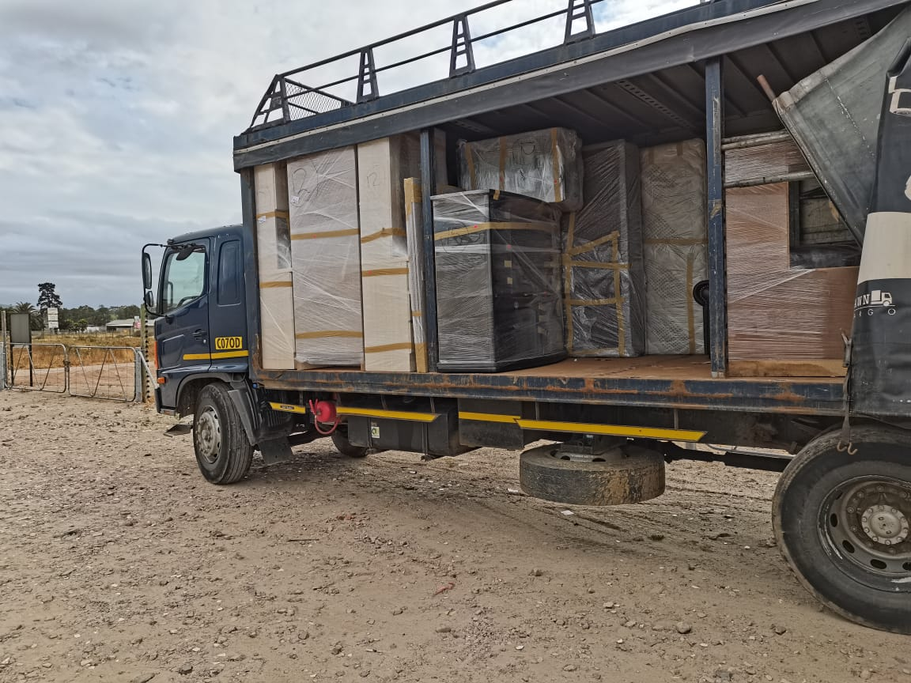

Claremont & Kenilworth
Full removals, single items and rubbish clearance in Claremont, Kenilworth and surrounding residential streets.
Serving Claremont, Rondebosch, Wynberg, Kenilworth, Tokai & surrounding areas
Whether you're moving house in Claremont, clearing out a flat in Rondebosch, or getting rid of old furniture in Wynberg, Wize Removal delivers a fast, professional and affordable service across all Cape Town Southern Suburbs.
We understand the Southern Suburbs — from the leafy streets of Constantia to the busy residential areas of Plumstead and Ottery. Our team knows the routes, can navigate tight access and will handle your belongings with care from first lift to final placement.

Full removals, single items and rubbish clearance in Claremont, Kenilworth and surrounding residential streets.
Serving the University of Cape Town corridor — student flat moves, full house relocations and furniture disposal.
Affordable removals and junk collection for Wynberg, Plumstead, Lansdowne and Ottery residents.
Careful, discreet moves for larger Constantia and Tokai properties — protecting floors, walls and valuables throughout.
Fast, competitively priced removals and rubbish clearing for Diep River, Retreat and Steenberg.
Narrow-street specialists — we navigate access challenges in Observatory, Woodstock and Salt River with the right-sized vehicles.
Kraaifontein, Bellville, Brackenfell, Durbanville — our home base with the fastest response times.
Northern SuburbsSea Point, Green Point, Camps Bay, De Waterkant and the City Bowl covered.
Atlantic SeaboardJust need one couch, bed or appliance removed? No full truck required — fast and affordable.
Single Item Removal